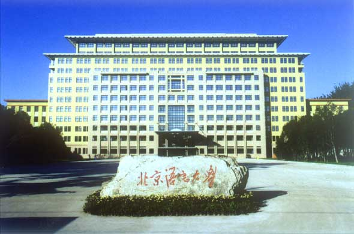

北京语言大学是教育部直属高校，创办于1962年，1964年6月定名为北京语言学院，1996年6月更名为北京语言文化大学，2002年校名简化为北京语言大学。北语是中国唯一一所以汉语国际教育和对来华留学生进行汉语、中华文化教育为主要任务的国际型大学，素有“小联合国”之称；又是一所以语言教学与研究为特色和优势的多科性大学，经过49年的发展，北京语言大学已成为我国中外语言、文化研究的重要学术基地和培养涉外高级人才的摇篮。北京语言大学是教育部直属高校，创办于1962年，1964年6月定名为北京语言学院，1996年6月更名为北京语言文化大学，2002年校名简化为北京语言大学。北语是中国唯一一所以汉语国际教育和对来华留学生进行汉语、中华文化教育为主要任务的国际型大学，素有“小联合国”之称；又是一所以语言教学与研究为特色和优势的多科性大学，经过49年的发展，北京语言大学已成为我国中外语言、文化研究的重要学术基地和培养涉外高级人才的摇篮。北京语言大学是教育部直属高校，创办于1962年，1964年6月定名为北京语言学院，1996年6月更名为北京语言文化大学，2002年校名简化为北京语言大学。北语是中国唯一一所以汉语国际教育和对来华留学生进行汉语、中华文化教育为主要任务的国际型大学，素有“小联合国”之称；又是一所以语言教学与研究为特色和优势的多科性大学，经过49年的发展，北京语言大学已成为我国中外语言、文化研究的重要学术基地和培养涉外高级人才的摇篮。